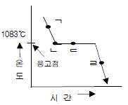
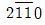

금속재료산업기사 (2013-03-10 기출문제)
1과목: 금속재료
1. 특수강을 제조하는 목적이 아닌 것은?
- 경도 증대
- 내식성, 내열성 증대
- 취성, 전연성 증대
- 내마모성, 절삭성 증대
(정답률: 91%)

2. 실루민의 주조 조직에 나타나는 규소는 육각판상의 거친 결정이므로 개량처리하여 조직을 미세하 시켜야 한다. 이 때 사용하는 접종제가 아닌 것은?
- 알루미늄
- 불화알카리
- 수산화나트륨
- 금속나트륨
(정답률: 72%)
3. 특수용도용 합금강에서 일반적으로 전자기적 특성을 개선하는 원소는?
- Ni
- Mo
- Si
- Cr
(정답률: 68%)
4. 인청동의 특징을 설명한 것 중 틀린 것은?
- 내식성 및 내마모성이 우수하다.
- 펌프부품, 기어 및 화학기계용 부품에 사용된다.
- 주석 청동 중에 보통 0.⑤~0.5%의 인을 함유한다.
- 인은 극소량의 Cu 중에 고용되고, 나머지 Cu3P 상을 연성을 높여주는 역할을 한다.
(정답률: 84%)
5. 18-8 스테인레스강에 대한 설명 중 틀린 것은?
- Cr18%, Ni8%를 함유한다.
- 페라이트 조직으로 강자성이다.
- 입계부식 방지를 위해 Ti을 첨가한다.
- 내식성, 내충격성, 기계가공성이 우수하다.
(정답률: 80%)
6. 상온 또는 가열된 금속을 실러딘 모양의 컨테이너에 넣고 한쪽에 있는 램에 압력을 가하여 밀어 내어 봉, 관, 형재 등의 가공방법은?
- 전조가공
- 단조가공
- 프레스가공
- 압출가공
(정답률: 86%)
7. 순철에서 일어나지 않는 변태는?
- A1변태
- A2변태
- A3변태
- A4변태
(정답률: 88%)
8. 탄소강의 상온 특성에 대한 설명 중 옳은 것은?
- 비중, 열전도도는 탄소량의 증가에 따라 증가한다.
- 탄소량의 증가에 따라 경도, 인장강도는 감소한다.
- 탄성계수, 항복점은 온도가 상승하면 증가한다.
- Fe3C가 석출하면 경도는 증가하나 인장강도는 감소한다.
(정답률: 65%)
9. 그림과 같은 순금속의 냉각곡선에서 응고 잠열을 방출하기 시작하는 곳은?

- ㄱ
- ㄴ
- ㄷ
- ㄹ
(정답률: 77%)
10. 소결 초경합금으로 사용되는 것이 아닌 합금계는?
- WC-Co 계
- WC-TiC-Co 계
- Zn-Cr-W-C 계
- WC-TiC-TaC-Co 계
(정답률: 87%)
11. 형상기억합금 제조에 이용되는 성질은?
- 냉간가공
- 시효경화
- 확산 변태
- 마텐자이트 변태
(정답률: 79%)
12. 반도체 소자의 틀로 사용되는 리드프레임(lead frame)이 갖추어야 할 성질이 아닌 것은?
- 열방출성이 낮을 것
- 도금과 납땜이 잘 될 것
- Si와 열팽창 차가 적을 것
- 펀치 가공 후에도 소재의 평탄도가 유지될 것
(정답률: 84%)
13. 다음 중 순철의 동소체가 아닌 것은?
- α-Fe
- β-Fe
- γ-Fe
- δ-Fe
(정답률: 77%)
14. 일명 화이트메탈이라 불리는 베어링용 합금의 성분으로 조합되지 않는 것은?
- Zn-Al-Bi
- Sn-Sb-Cu
- Pb-Sn-Sb
- Sn-Sb-Cu-Pb
(정답률: 79%)
15. 구상흑연주철의 바탕(matrix)조직에 따른 형태가 아닌 것은?
- 페라이트(ferrite)형
- 펄라이트(pearlite)형
- 오스테나이트(austeninte)형
- 시멘타이트(cementite)형
(정답률: 68%)
16. Ti 특징을 설명한 것으로 옳은 것은?
- 열 및 도전율이 높다.
- 비강도(강도/중량비)가 높다.
- 융용점이 낮고 중금속이다.
- 상온에서 물 또는 공기 중에서는 부동태 피막이 형성되지 않는다.
(정답률: 72%)
17. 분말야금법의 특징을 설명한 것 중 옳은 것은?
- 가공 정밀도가 낮다.
- 고융점재료의 제조가 어렵다.
- 편석, 결정립 조대화의 문제가 작다
- 실수율이 낮아 양산품 제조에 부적합하다.
(정답률: 78%)
18. Ni-Cr 계 합금의 특징을 나타낸 것 중 틀린 것은?
- 내열성이 크다.
- 전기 저항이 대단히 작다.
- 내식성이 크고 산화도가 적다.
- Fe 및 Cu에 대한 열전효과가 크다.
(정답률: 78%)
19. 다음 중 일반적으로 합금이 순금속보다 우수한 성질은?
- 전성
- 연성
- 전기 전도율
- 강도 및 경도
(정답률: 84%)
20. 탄소강에서 황(S)으로 인한 적열취성을 방지하기 위하여 첨가하는 원소는?
- C
- Mn
- Si
- Se
(정답률: 84%)
2과목: 금속조직
21. 다음 중 탄성률(E)을 나타내는 식으로 옳은 것은? (단, σ : 응력, ε : 변형률이다.)
- E = σ / ε
- E = σ ㆍ ε
- E = ε / E
- E = σ + ε
(정답률: 83%)
22. 니켈과 구리는 상온에서 FCC 격자구조를 가지며 원자 반경이 각각 1.234Å와 1.275Å이다. 니켈과 구리로 합금을 만들 경우 상온에서의 상태는?
- 금속간 화합물
- 치환형 전율 고용체
- 이차형 한율 고용체
- 침입형 전율 고용체
(정답률: 67%)
23. 전율 고용체 합금에서 강도가 최대인 경우는?
- 합금에 따라 다르다.
- 동일 비율로 합금된 경우이다.
- 융점이 낮은 금속이 많이 포함된 경우이다.
- 융점이 높은 금속이 많이 포함된 경우이다.
(정답률: 80%)
24. 고속도강이나 금형강을 담금질 한 후 뜨임하여 경화시키는 처리는?
- 수인처리
- 용체화처리
- 1차경화처리
- 2차 경화처리
(정답률: 67%)
25. 면심입방격자(FCC)의 충전율은?
- 26%
- 32%
- 68%
- 74%
(정답률: 81%)
26. F = C-P +1의 상률 공식에서 P가 가지는 의미는?
- 자유도
- 대기압
- 상의 수
- 성분 수
(정답률: 82%)
27. 금속을 소성가공할 때 가공도가 증가하면 일어나는 현상으로 옳은 것은?
- 연성이 증가한다.
- 밀도가 증가한다.
- 항복강도가 증가한다.
- 전기저항이 감소한다.
(정답률: 58%)
28. 변형을 받은 금속에서 축적에너지의 크기에 관한 설명으로 틀린것은?
- 내부변형이 복잡할수록 축적에너지 축적에너지의 양은 증가한다.
- 축적에너지 양은 결정립도가 증가함에 따라 증가한다.
- 낮은 가공온도에서의 변형은 축정에너지 양을 증가시킨다.
- 주어진 변형에서 불순물 원자를 첨가할수록 축적에너지 양은 증가한다.
(정답률: 48%)
29. 두 금속을 합금하는 경우 나타나는 일반적인 성질로 옳은 것은?
- 밀도는 두 금속의 결정구조와 무관하다.
- 합금을 하면 인장강도는 증가한다.
- 융점은 두 금속 중 고온의 금속보다 항상 높아진다.
- 두 금속 원자의 크기 차가 클수록 치환형 고용체를 형성하기 쉽다.
(정답률: 71%)
30. 2성분계 합금에서 핵편석(coring)현상이 가장 심한 반응계로 재석출형이라 부르는 것은?
- 포석반응
- 포정반응
- 편정반응
- 공정반응
(정답률: 51%)
31. 황동의 평형상태도에서 6개의 상 중 α의 결정격자는?
- 면심입방격자
- 정방격자
- 조밀육방격자
- 체심입방격자
(정답률: 58%)
32. 침입형 고용체를 형성하는 원소가 아닌 것은?
- 탄소(C)
- 질소(N)
- 붕소(B)
- 규소(Si)
(정답률: 72%)
33. 용질원자가 전위와 상호작용을 할 때 단범위 장애물을 형성하며 저온에서만 유동 응력에 기여하는 작용은?
- 강성률 상호 작용
- 탄성적 상호 작용
- 전기적 상호 작용
- 장범위 규칙도 상호 작용
(정답률: 59%)
34. 결정내의 슬립(slip)면 위에 슬립한 부분과 슬립하지 않은 부분의 경계에 생기는 결함은?
- 킹크(kink)
- 쌍정(twin)
- 공공(Vacancy)
- 전위(dislocation)
(정답률: 56%)
35. 다음 중 규칙-불규칙변태와 무관한 것은?
- 자성
- 전기전도도
- 금속간 화합물
- 기계적 성질
(정답률: 58%)
36. 금속의 합금에서 온도가 일정할 때 확산속도가 가장 빠른 것은?
- 표면확산
- 입계확산
- 격자확산
- 입내확산
(정답률: 86%)
37. 원자 확산계수 D의 단위를 나타내는 것은?
- cm/in
- cm2/in
- cm/sec
- cm2/sec
(정답률: 76%)
38. 체심입방격자가 결정구조를 갖는 Mo의 슬립면과 슬립방향은?
- {0001}, <

> - {111}. <110>
- {110}, <111>
- {123}, <111>
(정답률: 76%)
39. 강의 물리적 성질을 설명한 것으로 틀린 것은?
- 비중은 탄소량의 증가에 따라 감소한다.
- 열전도도는 탄소량의 증가에 따라 감소한다.
- 전기저항은 탄소량의 증가에 따라 증가한다.
- 탄소강은 일반적으로 자성을 띠고 있지 않다.
(정답률: 62%)
40. 마텐자이트(martensite) 변태의 특징이 아닌 것은?
- 무확산 변태를 한다.
- 단상에서 단상으로 변한다.
- 응력을 가하면 Ms 이상에서도 변태된다.
- 합금원소를 첨가하여도 Ms 점의 변화없이 변태한다.
(정답률: 68%)
3과목: 금속열처리
41. 침탄 처리할 때 경화층 깊이를 증가시키는 원소는?
- S, P
- Si, V
- Ti, Al
- Cr, Mo
(정답률: 78%)
42. 담금질 액을 교반하는 방법에는 프로펠러를 이용하거나 펌프 등을 사용한다. 교반의 세기 조정시 고려할 사항이 아닌것은?
- 뜨임온도
- 냉각제의 냉각속도
- 허용하는 변형의 한도
- 사용하는 재질의 담금질성
(정답률: 56%)
43. 다음 중 심냉처리(sub-zero treatment)를 실시해야 하는 강종이 아닌 것은?
- 불림(공냉)처리한 SM25C
- 담금질(유냉)처리한 STB2
- 담금질(유냉)처리한 SKH51
- 침탄처리 후 담금질(유냉)한 SCr420
(정답률: 80%)
44. 가열된 기판 위에 코팅하고자 하는 피막의 성분을 포함한 원료의 혼합 가스를 접촉시켜 기상 반응에 의하여 표면에 금속, 탄화물, 질화물 등의 다양한 피막을 생성시키는 처리는?
- 스퍼터링
- 화학 증착법
- 진공 증착법
- 이온 플레이팅
(정답률: 74%)
45. 열처리 결함 중 탈탄 현상을 설명한 것으로 틀린 것은?
- 담금질 경도가 떨어진다.
- 기계적 성질 특히 피로강도가 저하한다.
- 표면에 탈탄이 일어나서 펄라이트조직이 많이 보인다.
- 강표면에 인장응력이 발생하여 변형이나 균열의 원인이 된다.
(정답률: 71%)
46. 강의 담금질성을 판단하는 방법이 아닌 것은?
- 강박시험에 의한 방법
- 임계지름에 의한 방법
- 조미니시험에 의한 방법
- 임계냉각속도를 사용하는 방법
(정답률: 67%)
47. 냉간가공, 단조 등으로 인한 조직의 불균일 제거, 결정립미세화, 물리적, 기계적 성질의 표준화를 목적으로 대기 중에 냉각시키는 열처리는?
- 뜨임
- 풀림
- 담금질
- 노멀라이징
(정답률: 77%)
48. 펄라이트 가단주철의 제조방법으로 틀린 것은?
- 합금첨가에 의한 방법
- 열처리 곡선의 변화에 의한 방법
- 흑심가단주철의 재열처리에 의한 방법
- 구상흑연주철의 재열처리에 의한 방법
(정답률: 52%)
49. 열간공구강인 STD 61소재는 담금질하면 오스테나이트가 잔류하는 데 이를 마텐자이트화 하기 위하여 영하의 온도에서 실시하는 처리는?
- 심냉처리
- 블루잉처리
- 파텐팅처리
- 오스템퍼링처리
(정답률: 81%)
50. 텅스텐계 고속도강의 열처리에 대한 설명으로 틀린 것은?
- 고속도강의 담금질 온도는 약 1250~1300℃의 고온이다.
- 고속도강은 자경성이 강하므로 풀림시의 냉각 속도는 화색이 없어지기 전까지 서냉한다.
- 결정립의 조절, 조직의 개선 및 2차 경화를 위하여 노멀라이징처리를 한다.
- 담금질 온도가 높아지면 탄화물이 오스테나이트 중에 완전히 고용시켜 잔류 오스테나이트가 많아진다.
(정답률: 45%)
51. 일반적인 열처리의 목적을 설명한 것 중 틀린 것은?
- 경도 또는 인장력을 증가시키기 위한 것이다.
- 냉간가공에 의해서 생기는 응력을 제거하는 것이다.
- 조직을 최대한 조대화시키고, 방향성을 크게 갖게 하기위한 것이다.
- 조직을 연한 것으로 변화시키거나 또는 기계 가공을 좋게 하기 위한 것이다.
(정답률: 84%)
52. 다음 중 연속냉각변태에서 오스테나이트로부터 마텐자이트로 변화하는 변태는?
- Ar′변태
- Ar1변태
- Ar″변태
- Ar3변태
(정답률: 75%)
53. 탄화물을 피복하는 TD처리(Toyota Diffusion Process)의 특징으로 틀린 것은?
- 처리온도가 낮아 용융 염욕 중에서는 사용할 수 없다.
- 설비가 간단하고 처리품의 조작이 자유롭다.
- 높은 경도와 우수한 내소착성이 있다.
- 확산법에 의한 탄화물 피복법이다.
(정답률: 74%)
54. 자동온도제어장치의 순서로 맞는 것은?
- 검출 → 판단 → 비교 → 조작
- 검출 → 비교 → 판단 → 조작
- 조작 → 판단 → 검출 → 비교
- 조작 → 비교 → 판단 → 검출
(정답률: 70%)
55. 기계구조용 부품으로 사용하는 베릴륨 청동의 열처리 특징에 관한 설명 중 틀린 것은?
- 베릴륨 청동은 재결정 풀림하여 사용한다.
- 시효처리시 경도, 인장강도와 항복점이 늘어난다.
- 공업적으로 고온 및 부식환경에 있는 스프링 접촉자에 사용한다.
- 선, 판으로부터 선 스프링, 판 스프링을 만들 때는 풀림처리로 연화시켜 성형한다.
(정답률: 48%)
56. 고주파 경화법에 관한 설명으로 옳은 것은?
- 코일의 재료는 주로 탄소강을 사용한다.
- 가열 면적이 좁을 때는 다권 코일을 사용한다.
- 가열 면적이 넓고 길 때는 단권 코일을 사용한다.
- 코일과 고주파 발생장치를 연결하는 리드는 될 수 있는 한 간격을 좁게 해야 한다.
(정답률: 78%)
57. 전기로 중 상부 또는 하부에 열풍 팬을 설치하여 온도 분포가 매우 좋으며 길이가 긴 부품의 담금질 및 가스 침탄의 뜨임용으로 많이 사용되는 로는?
- 상형로
- 원통로
- 대차로
- 회전 레토르트
(정답률: 64%)
58. 강을 열처리시 산화에 기인되는 것이 아닌 것은?
- 탈탄
- 고운 표면
- 경도 불균일
- 담금질 시 균열
(정답률: 79%)
59. Al합금, Mg합금 등과 같은 경합금에 가장 알맞은 열처리 방법은?
- 표면경화 열처리
- 시효경화 열처리
- 항온변태 열처리
- 응력제거 열처리
(정답률: 71%)
60. 열처리용 온도계 중 팽창온도계는?
- 방사온도계
- 광전관 온도계
- 저항온도계
- 봉상온도계
(정답률: 67%)
4과목: 재료시험
61. 비금속 개재물(Non-metallic inclusion)에 대한 설명으로 틀린 것은?
- 응력집중의 원인이 된다.
- 피로한계를 저하시킨다.
- 철강 내에 개재하는 고형체의 불순물이다.
- 투가 전자 현미경 시험으로만 발견할 수 있다.
(정답률: 81%)
62. 재료의 연성을 알기하기 위한 것으로 구리판, 알루미늄판 및 기타 연성판재를 가압 성형하여 변형능력을 시험하는 방법은?
- 굽힘시험
- 커핑시험
- 응력파단시험
- 슬라이딩 마모시험
(정답률: 75%)
63. 현미경으로 측정한 비금속 재재물의 종류 중에서 그룹 A계개재물은?
- 황화물 종류
- 알루민산염 종류
- 규산염 종류
- 단일 구형의 종류
(정답률: 77%)
64. 자분탐상시험의 자화방법에 해당되지 않는 것은?
- 통전법
- 형광법
- 코일법
- 프로드법
(정답률: 71%)
65. 물체에 해머(추)를 낙하시켰을 때 반발되어 튀어오르는 높이로 경도를 측정하는 시험은?
- 브리넬 시험
- 로크웰 시험
- 비커스 시험
- 쇼어 시험
(정답률: 83%)
66. 황동의 비틀림 시험과 비틀림 응력 및 변형율을 구하기 위한 가정들에 대한 설명 중 틀린 것은?
- 봉의 단면은 변형 후에도 역시 평면이다.
- 강성계수(전단 탄성계수) 등을 구할 수 있다.
- 단면상에서의 반경은 변형 후에도 그 반경으로 취급한다.
- 비틀림 각도는 토크-비틀림 선도 초기에는 반비례로 나타나나 항복점을 지나면 감소가 급격하게 된다.
(정답률: 54%)
67. 알루미늄 압출품의 표면에 존재하는 랩(lap), 미세균열의 검출에 적합한 비파괴 시험법은?
- 자분탐상 시험
- 침투탐상 시험
- 초음파탐상 시험
- 음향방출 시험
(정답률: 62%)
68. 크리프(creep)시험은 긴 시간이 필요하다. 이 때 시험실의 환경조건에서 정확한 시험결과를 얻기 위한 가장 우선적인 조치는?
- 내진(내충격) 설비
- 조명 및 환기 설비
- 소음 방지 장치
- 분진 방지 장치
(정답률: 83%)
69. 안전보건교육의 단계별 교육과정 중 지식교육, 기능교육, 태도 교육 중 태도교육 내용에 해당되는 것은?
- 안전규정 숙지를 위한 교육
- 전문적 기술 및 안전 기술 기능
- 작업 전후 점검 및 검사요령의 정확화 및 습관화
- 안전의식의 향상 및 안전에 대한 책임감 주입
(정답률: 70%)
70. 금속 내부의 깊은 결함에 대한 정보를 얻기 위한 비파괴시험법은?
- 와전류 탐상시험
- 자분탐상시험
- 침투탐상시험
- 방사선투과시험
(정답률: 80%)
71. 다음의 열처리된 조직 중 기계적 피로 한도가 가장 큰 조직은?
- 마텐자이트 + 트루스타이트
- 펄라이트 + 페라이트
- 트루스타이트 + 오스테나이트
- 페라이트 + 오스테나이트
(정답률: 64%)
72. 인장시험편의 표점거리는 50mm이고, 인장 시험 후 절단된 시편의 표점거리가 65.6mm일 때 이 시편의 연신율은?
- 21.2%
- 31.2%
- 41.2%
- 51.2%
(정답률: 67%)
73. 피로시험의 종류 중 시험편이 축방향에 인장 및 압축이 교대로 작용하는 시험은?
- 반복 굽힘시험
- 반복 인장 압축 시험
- 반복 비틀림시험
- 반복 응력 피로시험
(정답률: 82%)
74. 한국산업표준에 대한 인장시험에 대한 설명으로 틀린 것은?
- 시험온도는 0~40℃의 범위 내로 하고, 특히 온도 관리가 필요할 때에는 30±5℃로 한다.
- 하중을 가하는 속도가 측정 결과에 현저한 영향을 미칠 우려가 있는 재료에 대해서는 그 재료 표준이 정한 바에 따른다.
- 상항복점, 하항복점, 내력을 측정하는 경우는 재료 표준에서의 규정 값에 대응하는 하중의 1/2하중까지 적절한 속도로 하중을 가한다.
- 인장강도 규정 값에 해당하는 하중의 50%를 넘은 후에는 시험편 평행부의 변형 증가율이 강에서는 20~80%/min, 알루미늄 및 그 합금에서는 80%/min 이하가 되는 속도로 당긴다.
(정답률: 64%)
75. 초음파탐상검사에서 초음파의 특징을 설명한 것 중 옳은 것은?
- 파장이 짧으며, 직진성을 갖는다.
- 고체 내에서 전파가 잘되지 않는다.
- 원거리에서 초음파빔은 확산되지 않아 강하다.
- 고체 내에서 종파 1종류의 초음파만이 존재한다.
(정답률: 72%)
76. 충격시험에서 충격값의 단위로 옳은 것은?
- kgf/m
- kgf/mm2
- kgfㆍm/cm2
- kgfㆍcosθㆍm
(정답률: 66%)
77. 철강 재료를 신속, 간편하게 선별하는 불꽃시험법에 대한 설명 중 틀린 것은?
- 검사는 같은 방법 및 같은 조건으로 실시하여야 한다.
- 탈탄,침탄 정도의 개략적 판정을 할 수 있다.
- 불꽃시험에서 탄소의 양(%)이 증가하면 불꽃의 수가 감소하고 그 형태도 단순해진다.
- 그라인더 불꽃시험은 불꽃의 형태에 의해 재료의 탄소 양(%)을 판정한다.
(정답률: 82%)
78. 황의 편석부가 짙은 농도로 착색된 점상으로 나타난 편석의 기호는?
- SN
- SC
- SD
- SCO
(정답률: 66%)
79. 금속 현미경을 사용하여 시험편의 조직을 관찰할 때 주의해야 할 사항 중 틀린 것은?
- 저배율에서 고배율로 관찰한다.
- 배율 확인 후에 대물 및 접안렌즈를 고정시킨다.
- 시편을 받침대에 올려놓고 크래프로 고정시킨다.
- 미동 나사로 초점을 대략 맞춘 후 조동 나사로 초점을 정확히 맞추어 관찰한다.
(정답률: 79%)
80. 철강 재료에 존재하는 황(S)의 분포상태와 편석을 검사하는 방법은?
- 제프리즈법
- 매크로 검사법
- 설퍼프린트법
- 비금속재재물 검사법
(정답률: 80%)